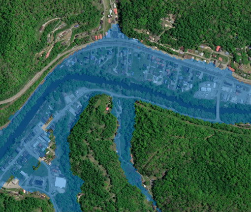
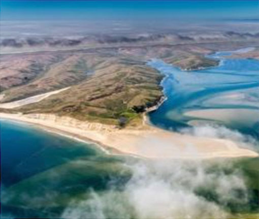
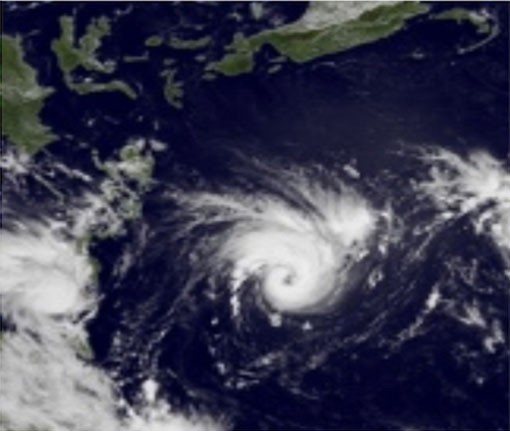
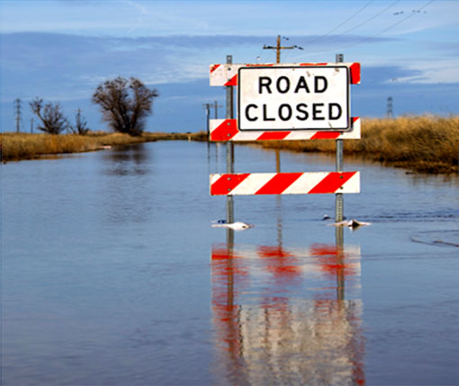

NOAA’s transformative Flood Inundation Mapping expands to 60% of U.S.Experimental services improve flood communications for emergency managers and the public
September 3, 2025
|
 |
Storms and streams: Mapping waterways to save lives and protect the economyRaytheon, NOAA building experimental flood maps to improve water prediction
January 25, 2024
|
 |
RTX to optimize water prediction capabilities for NOAANext-Gen Water Prediction framework will help communities prepare for and respond to weather, water and climate-dependent events
September 28, 2023
|
 |
Biden-Harris Administration announces $80 million through Investing in America Agenda to improve flood prediction capabilitiesFunding supports NOAA's efforts to upgrade the National Water Model and expand Flood Inundation Mapping services
September 27, 2023
|
 |